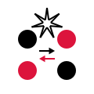
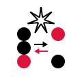

Token Values¶
Counters¶
They’re used basically in any action.
-

Value one
-

Value two
-

Value three
-

Value five
-
Value seven
-

Value minus one
-
Value golden ratio
-
Value silver ratio
-
Value bronze ratio
-
Value plastic number
Fractions¶
They’re used basically in any action.
-
Value half
-
Value one third
-
Value two thirds
-
Value one quarter
-

Value third quarters
-

Value one fifth
-
Value two fifth
-
Value three fifth
-
Value four fifth
Angles¶
Angles are used in rotate actions ( and
and  ).
).
Note that 360° in the fractalang is not 2π but 1.0 value.
-

270° Angle
Alias for three quarters.
-
180° Angle
Alias for half value.
-
90° Angle
Alias for one quarter.
-
60° Angle
Alias for one sixth.
-
45° Angle
Alias for one eighth.
-

30° Angle
Alias for one twelfth.
-
15° Angle
Alias for one sixteenth.
-
10° Angle
Arguments¶
-

Argument
Returns a value from a currently invoked stave.
-

Diamond argument
Compute dynamically value from the*Diamond* stave.
-
Inverse triangle argument
Compute dynamically value from the Inverse triangle stave.
Colors¶
-
First color
Set the color of a figure/line to the first color given in the editor.
-

Second color
Set the color of a figure/line to the second color given in the editor.
-
Fill a shape
Fill a shape with a solid color.
-
Unfill a shape
Unfill a shape which makes transparent with an outline border.
-

Color transition (by 50%)
Change a color of a shape/line from the first to the second color.
-

Color transition (by 25%)
Change a color of a shape/line from the first to the second color.
-

Color transition (by 20%)
Change a color of a shape/line from the first to the second color.
-

Color transition (by 10%)
Change a color of a shape/line from the first to the second color.
Strokes¶
-
Increase the thickness
Change the thickness of a line.
-
Decrase the thickness
Change the thickness of a line.
Operator Modifiers¶
TODO